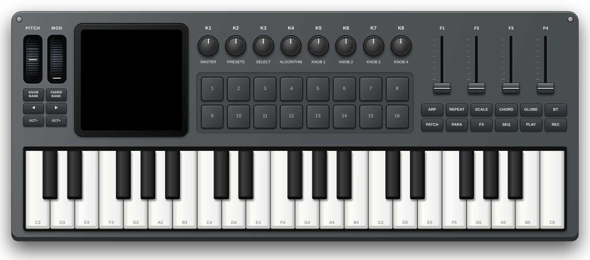

Manual do usuário · M-VAVE SMK-37
User manual · M-VAVE SMK-37
FMini-1 no SMK-37
FMini-1 on the SMK-37
O mesmo som do FM-1 num controlador de 37 teclas: 16 pads para os presets, oito knobs, quatro faders, duas rodas e um conjunto maior de botões.
The same sound as the FM-1 on a 37-key controller: 16 pads for the presets, eight knobs, four faders, two wheels and a larger set of buttons.
1Antes de começarBefore you start
O SMK-37 tem o mesmo chip do FM-1, e por isso roda o mesmo firmware. A diferença está no painel: 37 teclas (C3 a C6), 16 pads, oito knobs, quatro faders e as rodas de pitch e modulação. Os controles do FM-1 (MASTER, PRESETS, SELECT, ALGORITHM e os quatro KNOB) estão nos knobs K1 a K4; os botões de página têm equivalentes no painel do SMK-37.
Os 27 teclas centrais (F3 a G5) tocam com velocidade, como no FM-1. As 10 teclas das pontas tocam as notas que faltam, uma a uma, também com velocidade.
The SMK-37 has the same chip as the FM-1, so it runs the same firmware. The difference is the panel: 37 keys (C3 to C6), 16 pads, eight knobs, four faders and the pitch and modulation wheels. The FM-1's controls (MASTER, PRESETS, SELECT, ALGORITHM and the four KNOBs) are knobs K1 to K4; the page buttons have counterparts on the SMK-37 panel.
The 27 middle keys (F3 to G5) play with velocity, as on the FM-1. The 10 end keys play the remaining notes, one each, also with velocity.
2Instalação e segurançaInstallation and safety
- Faça um backup completo da memória flash do teclado antes de qualquer coisa. O guia do kit fm1-to-smk37 (seção 3 de
docs/02-update-and-recovery.md) explica como. - Tenha à mão o pacote do fabricante para o seu modelo e o atualizador dele. É o caminho de volta ao firmware de fábrica.
- Conecte o SMK-37 ao computador por USB e escolha, no site, o pacote do seu modelo (Pro, Elite ou MKE-P37). O instalador só grava o pacote do modelo conectado.
- Siga o instalador e não desligue o teclado durante a gravação.
O que o primeiro início apaga
- Na primeira vez, o FMini-1 apaga as configurações do firmware de fábrica e os dados de outros firmwares na área de dados compartilhada (o FMini-1 se marca como
SMK37DATAFMINI). - Os 200 presets ficam na área de amostras do usuário. O mapeamento de teclas, knobs e faders do firmware de fábrica fica lá até o FMini-1 gravar o primeiro preset; depois disso, o firmware de fábrica refaz o mapeamento dele ao voltar.
- O firmware nunca escreve a calibração do teclado, o pareamento Bluetooth nem as áreas de chaves. Essas áreas estão protegidas na compilação e no driver de flash.
- Make a full backup of the keyboard's flash memory before anything else. The guide of the fm1-to-smk37 kit (section 3 of
docs/02-update-and-recovery.md) explains how. - Have the manufacturer's package for your model and its updater ready. That is the way back to the factory firmware.
- Connect the SMK-37 to the computer by USB and choose, on the site, the package for your model (Pro, Elite or MKE-P37). The installer writes only the package for the connected model.
- Follow the installer and do not switch the keyboard off during the write.
What the first start clears
- The first time, FMini-1 clears the factory firmware's settings and any other firmware's data in the shared data area (FMini-1's store is tagged
SMK37DATAFMINI). - The 200 presets live in the user sample area. The factory firmware's key, knob and fader mapping stays there until FMini-1 first writes a preset; after that, the factory firmware rebuilds its own mapping when you go back.
- The firmware never writes the keyboard's calibration, the Bluetooth pairing or the key areas. The flash map refuses them at compile time, and the flash driver again at run time.
3O painelThe panel
O desenho mostra o painel do SMK-37 com os números dos grupos de controles. A legenda abaixo diz o que cada grupo faz.
The drawing shows the SMK-37 panel with the control groups numbered. The legend below says what each group does.

- PITCH e MOD: a roda de pitch (à esquerda) e a de modulação (à direita).
- A tela: mostra as páginas e os pop-ups do FM-1.
- K1 a K4: MASTER (volume), PRESETS, SELECT e ALGORITHM. São os quatro controles de navegação e de volume.
- K5 a K8: quatro knobs, cujo papel depende do banco de KNOB BANK (seção 5).
- Os 16 pads: escolhem presets (seção 6).
- F1 a F4: faders, cujo papel depende do banco de FADER BANK (seção 5).
- Os botões da direita: ARP, REPEAT, SCALE, CHORD, GLOBE, BT (linha de cima) e PATCH, PARA, FX, SEQ, PLAY, REC (linha de baixo).
- Os botões da esquerda: KNOB BANK, FADER BANK, as setas ◄ ► (preset anterior e próximo) e OCT− e OCT+.
- As 37 teclas: C3 a C6. As 27 centrais (F3 a G5) têm velocidade; as das pontas tocam notas extras, uma a uma.
- PITCH and MOD: the pitch wheel (left) and the modulation wheel (right).
- The screen: shows the FM-1's pages and pop-ups.
- K1 to K4: MASTER (volume), PRESETS, SELECT and ALGORITHM. The four navigation and volume controls.
- K5 to K8: four knobs whose role depends on the KNOB BANK (section 5).
- The 16 pads: pick presets (section 6).
- F1 to F4: faders, whose role depends on the FADER BANK (section 5).
- The buttons on the right: ARP, REPEAT, SCALE, CHORD, GLOBE, BT (top row) and PATCH, PARA, FX, SEQ, PLAY, REC (bottom row).
- The buttons on the left: KNOB BANK, FADER BANK, the ◄ ► arrows (previous and next preset) and OCT− and OCT+.
- The 37 keys: C3 to C6. The 27 middle ones (F3 to G5) have velocity; the end ones play extra notes, one each.
4ControlesControls
Cada botão do SMK-37 leva a uma função do FM-1. Os nomes de cá são os do painel; as funções são as descritas no manual do FM-1.
| SMK-37 | No FMini-1 |
|---|---|
| K1 · MASTER | Volume geral (0 a 100 na tela). |
| K2 · PRESETS | Troca o preset (000 a 199). |
| K3 · SELECT | Move o cursor pelos controles da página. |
| K4 · ALGORITHM | Muda o controle sob o cursor. |
| K5 a K8 | Quatro knobs, por KNOB BANK: FILT (padrão), CTRL (LFO), FX ou os quatro da página na tela (os KNOB 1 a 4 do FM-1). Ao girar, a tela mostra a página deles por 1 s; depois volta a página anterior. |
| PATCH | HOME: a página FILT; fecha os pop-ups. |
| PARA | EDIT: FILT; de novo, PRESET SETTINGS. |
| SCALE | SCL: OSC; de novo, MIX. No pop-up de DELAY, toca o tempo. |
| CHORD | ENV: F.ENV; de novo, A.ENV. |
| REPEAT | LFO: CTRL. |
| FX | FX; de novo, percorre os quatro pop-ups de efeito. |
| GLOBE | GLO: o menu GLOBAL. |
| BT | SAVE: o diálogo de salvar o preset. |
| ARP · SEQ | Os pop-ups do arpejador e do sequenciador. |
| SEQ PLAY · SEQ REC | PLAY e REC do sequenciador (seção 9 do manual do FM-1). |
| OCT− · OCT+ | Oitava para baixo e para cima. |
| ◄ · ► | Preset anterior e próximo, carregados ao soltar o botão. Segurados por 0,66 s, percorrem dez por segundo (o pop-up mostra onde estão). |
| Roda de pitch | Pitch bend, pelo alcance do preset (PRESET SETTINGS). Também sai como MIDI. |
| Roda de modulação | Como CC1 no FM-1 (o vibrato). Também sai como MIDI. |
| OCT− + OCT+ ligados na energização | HARDWARE CALIBRATION: ensina os botões e os knobs de novo. |
Each SMK-37 button leads to an FM-1 function. The names here are the panel's; the functions are the ones described in the FM-1 manual.
| SMK-37 | In FMini-1 |
|---|---|
| K1 · MASTER | Overall volume (0 to 100 on the screen). |
| K2 · PRESETS | Changes the preset (000 to 199). |
| K3 · SELECT | Moves the cursor over the page's controls. |
| K4 · ALGORITHM | Changes the control under the cursor. |
| K5 to K8 | Four knobs, by KNOB BANK: FILT (default), CTRL (LFO), FX or the four of the page on the screen (the FM-1's KNOB 1 to 4). When you turn one, the screen shows its page for 1 s; then the previous page comes back. |
| PATCH | HOME: the FILT page; closes the pop-ups. |
| PARA | EDIT: FILT; again, PRESET SETTINGS. |
| SCALE | SCL: OSC; again, MIX. In the DELAY pop-up, taps the tempo. |
| CHORD | ENV: F.ENV; again, A.ENV. |
| REPEAT | LFO: CTRL. |
| FX | FX; again, goes through the four effect pop-ups. |
| GLOBE | GLO: the GLOBAL menu. |
| BT | SAVE: the save-preset dialog. |
| ARP · SEQ | The arpeggiator and sequencer pop-ups. |
| SEQ PLAY · SEQ REC | The sequencer's PLAY and REC (section 9 of the FM-1 manual). |
| OCT− · OCT+ | Octave down and up. |
| ◄ · ► | Previous and next preset, loaded when the button is released. Held for 0.66 s, they run at ten a second (the pop-up shows where they are). |
| Pitch wheel | Pitch bend, by the preset's range (PRESET SETTINGS). Also sent as MIDI. |
| Mod wheel | As MIDI CC1 on the FM-1 (vibrato). Also sent as MIDI. |
| OCT− + OCT+ held at power-on | HARDWARE CALIBRATION: teaches the buttons and knobs again. |
5Bancos de knobs e fadersKnob and fader banks
K5 a K8 e os faders F1 a F4 podem mudar de função sem trocar de página. Dois botões escolhem o banco.
KNOB BANK
Escolhe o que K5 a K8 controlam. Cada aperto avança: FILT (o padrão), CTRL (o LFO), FX e, por último, a página que está na tela. Um pop-up mostra o banco escolhido por 1,2 s. A luz do botão acende quando o banco não é o padrão.
FADER BANK
Escolhe o que os faders F1 a F4 controlam. Cada aperto avança: A.ENV (o padrão), F.ENV, MIX e, por último, a página da tela. Um fader só assume quando você o move; ao mexer, a tela mostra a página dele por 1 s, como nos K5 a K8.
K5 to K8 and the faders F1 to F4 can change their role without changing page. Two buttons choose the bank.
KNOB BANK
Chooses what K5 to K8 control. Each press goes on: FILT (the default), CTRL (the LFO), FX and, last, the page on the screen. A pop-up names the bank for 1.2 s. The button lights when the bank is not the default.
FADER BANK
Chooses what the faders F1 to F4 control. Each press goes on: A.ENV (the default), F.ENV, MIX and, last, the page on the screen. A fader takes over only once you move it; when it moves, the screen shows its page for 1 s, as K5 to K8 do.
6Pads
Os 16 pads são o seletor de presets. Eles mostram os 16 presets da página em que está o preset carregado: o carregado acende em branco; os outros, em azul apagado. Apertar um pad carrega o preset dele.
No diálogo de SAVE, os pads escolhem o slot em que o preset será gravado.
Dentro do pop-up de SEQ, os pads mostram 16 dos 64 passos do sequenciador (a página do passo que toca, ou a do slot em que uma gravação entra). Um passo com nota aparece na cor da sua faixa: 1 a 16 em azul, 17 a 32 em vermelho, 33 a 48 em amarelo, 49 a 64 em verde. O passo que está tocando fica branco; os outros, apagados.
The 16 pads are the preset picker. They show the 16 presets of the page the loaded preset is on: the loaded one lights white; the others show dim blue. Pressing a pad loads its preset.
In the SAVE dialog, the pads pick the slot the preset is written to.
Inside the SEQ pop-up, the pads show 16 of the sequencer's 64 steps (the page of the step that plays, or of the slot a recording goes into). A step with a note shows in its window's colour: 1 to 16 blue, 17 to 32 red, 33 to 48 yellow, 49 to 64 green. The step that plays is white; the others are dark.
7MIDI
A entrada TRS do SMK-37 é uma saída de MIDI; não há entrada MIDI pelo TRS. O MIDI entra só pela USB (e o clock MIDI também).
GLO > MIDI SETTINGS
| Linha | Opções |
|---|---|
| MIDI OUT | ALL (USB e a saída TRS; o padrão), USB ou TRS. |
| MIDI OUT CH | 1 a 16 (padrão 1): as teclas, as rodas e as notas do ARP e do SEQ. |
| MIDI IN CH | ANY (padrão), ou 1 a 16. |
| MIDI IN CC | O CC de cada controle. |
| MIDI CLOCK | OFF ou USB. |
| MIDI IN MONITOR | As últimas mensagens recebidas. |
O que sai pelo MIDI OUT
- As 37 teclas: as notas com velocidade, no canal de MIDI OUT CH, com a oitava (OCT− e OCT+).
- Os 16 pads: as notas 36 a 43 (fileira de baixo) e 44 a 51 (fileira de cima), no canal 10, com velocidade e note-off. Eles continuam escolhendo presets.
- K1 a K8: CC 102 a 109 no canal de MIDI OUT CH, seja qual for a função deles no FMini-1. Cada encoder mantém um valor de 0 a 127, a partir de 64; o K1 é o 0 a 127 do MASTER.
- Os faders 1 a 4: CC 110 a 113 no canal de MIDI OUT CH, seja qual for o banco.
- As rodas: pitch bend, e o mod wheel como CC1.
The SMK-37's TRS jack is a MIDI output; there is no TRS MIDI input. MIDI comes in over USB only (MIDI clock too).
GLO > MIDI SETTINGS
| Line | Options |
|---|---|
| MIDI OUT | ALL (USB and the TRS jack; the default), USB or TRS. |
| MIDI OUT CH | 1 to 16 (default 1): the keys, the wheels, and the ARP and SEQ notes. |
| MIDI IN CH | ANY (default), or 1 to 16. |
| MIDI IN CC | The CC of each control. |
| MIDI CLOCK | OFF or USB. |
| MIDI IN MONITOR | The last messages received. |
What MIDI OUT sends
- The 37 keys: their notes with velocity, on the MIDI OUT CH channel, with the octave (OCT− and OCT+).
- The 16 pads: notes 36 to 43 (the bottom row) and 44 to 51 (the top row), on channel 10, with velocity and note-off. They still pick presets.
- K1 to K8: CC 102 to 109 on the MIDI OUT CH channel, whatever they do in FMini-1. Each encoder keeps a value from 0 to 127, starting at 64; K1 is the MASTER's 0 to 127.
- Faders 1 to 4: CC 110 to 113 on the MIDI OUT CH channel, whatever bank they are in.
- The wheels: pitch bend, and the mod wheel as CC1.
8ModelosModels
Os três modelos são o mesmo hardware. Cada pacote leva o nome do seu modelo, e o instalador só grava o pacote do modelo conectado.
| Modelo | Pacote | Identidade |
|---|---|---|
| SMK-37 Pro | fmini-1-smk37-…fwsc (o padrão; também o Starrykey 37 Play) | SMK-37 Pro_900 |
| SMK-37 Elite | fmini-1-smk37-elite-…fwsc | SMK-37 Elite_900 |
| MKE-P37 | fmini-1-smk37-mke-…fwsc | MKE-P37_900 |
The three models are the same hardware. Each package carries its model's name, and the installer writes only the package for the connected model.
| Model | Package | Identity |
|---|---|---|
| SMK-37 Pro | fmini-1-smk37-…fwsc (the default; also the Starrykey 37 Play) | SMK-37 Pro_900 |
| SMK-37 Elite | fmini-1-smk37-elite-…fwsc | SMK-37 Elite_900 |
| MKE-P37 | fmini-1-smk37-mke-…fwsc | MKE-P37_900 |
9DúvidasQuestions
Não ouço nada
- Suba o K1 (MASTER): a tela mostra 0 a 100.
- Confira a mixagem e o filtro na página MIX e FILT, como no FM-1.
- Veja se o preset carregado tem nível (PRESET SETTINGS > VOLUME).
Os faders ou os knobs K5 a K8 não fazem o que eu espero
Confira o banco: o botão KNOB BANK ou FADER BANK acende quando o banco não é o padrão. Um pop-up mostra o banco escolhido por 1,2 s.
Um preset não sai na tela ao apertar um pad
Os pads só mostram os presets da página em que está o preset carregado. Se você quer outra página, use ◄ e ► para andar nos presets.
O MIDI não responde
Lembre que o SMK-37 não recebe MIDI pelo TRS. Confira o MIDI IN pela USB e os canais em GLO > MIDI SETTINGS.
I hear nothing
- Raise K1 (MASTER): the screen shows 0 to 100.
- Check the mix and the filter on the MIX and FILT pages, as on the FM-1.
- Check the loaded preset has a level (PRESET SETTINGS > VOLUME).
The faders or knobs K5 to K8 do not do what I expect
Check the bank: the KNOB BANK or FADER BANK button lights when the bank is not the default. A pop-up names the bank for 1.2 s.
A pad does not show the preset I want
The pads only show the presets of the page the loaded preset is on. To go to another page, use ◄ and ► to walk through the presets.
MIDI does not respond
Remember the SMK-37 does not receive MIDI through the TRS jack. Check MIDI IN over USB and the channels in GLO > MIDI SETTINGS.
CréditosCredits
A camada de placa do SMK-37 vem do kit fm1-to-smk37 (genkigenki/Felucca, ramo smk37). FMini-1 foi feito por Guilherme Ruppert, um fork do Felucca de Leo Kuroshita (Hügelton Instruments), sob GPL-3.0.
The SMK-37 board layer comes from the fm1-to-smk37 kit (genkigenki/Felucca, branch smk37). FMini-1 was made by Guilherme Ruppert, a fork of Felucca by Leo Kuroshita (Hügelton Instruments), under GPL-3.0.